เลือกหัวข้อที่อยากรู้
Digital Guide นี้จัดทำขึ้นเพื่อช่วยให้ผู้ชมเรียนรู้วัดมัชฌิมาวาสจากสถานที่จริง ทั้งประวัติ สถาปัตยกรรม จิตรกรรมฝาผนัง และโบราณวัตถุ พร้อมใช้สื่อดิจิทัลเป็นส่วนเสริมการเรียนรู้
ประวัติความเป็นมา
วัดมัชฌิมาวาส หรือ “วัดกลาง” เป็นวัดสำคัญและเก่าแก่แห่งหนึ่งของเมืองสงขลา มีประวัติความเป็นมาย้อนไปถึงสมัยอยุธยาตอนปลาย
เดิมวัดแห่งนี้เรียกว่า “วัดยายศรีจันทร์” ตามชื่อคหบดีผู้สร้าง ต่อมาชาวบ้านเรียกว่า “วัดกลาง” เนื่องจากมีวัดเลียบอยู่ทางทิศเหนือและวัดโพธิ์อยู่ทางทิศใต้ ทำให้วัดตั้งอยู่ตรงกลางระหว่างวัดทั้งสอง
ใน พ.ศ. ๒๔๓๑ พระเจ้าน้องยาเธอ กรมหมื่นวชิรญาณวโรรส เสด็จเมืองสงขลาและทรงเปลี่ยนชื่อวัดกลางเป็น “วัดมัชฌิมาวาส” ซึ่งมีความหมายสอดคล้องกับชื่อวัดกลาง
ต่อมาในวันที่ ๑๗ สิงหาคม พ.ศ. ๒๔๖๐ ได้รับการยกฐานะเป็น พระอารามหลวงชั้นตรี ชนิดวรวิหาร มีชื่อทางราชการว่า “วัดมัชฌิมาวาสวรวิหาร”
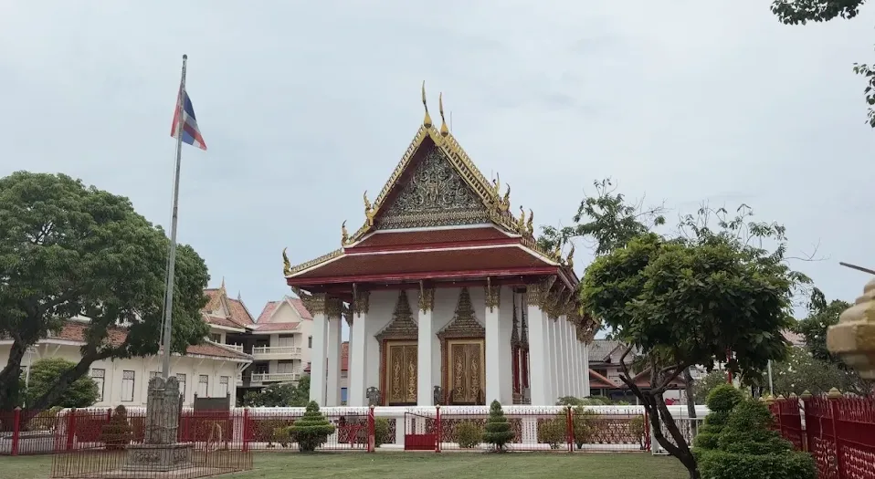
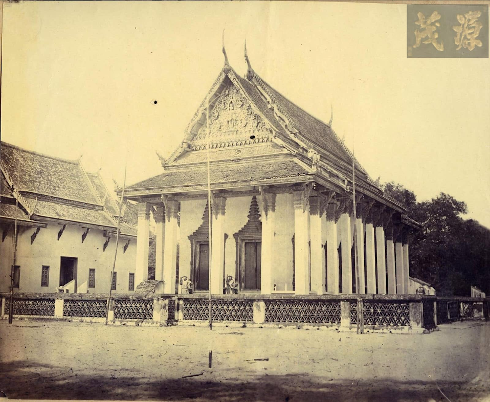
อ้างอิงภาพ: Facebook ชุมชาวจีนเมืองสงขลา
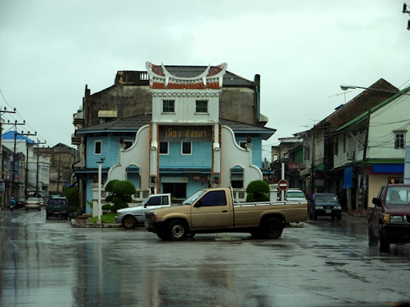
อ้างอิงภาพ: https://travel.kapook.com/view72007.html
สถาปัตยกรรม
สถาปัตยกรรมของวัดมัชฌิมาวาสสะท้อนการผสมผสานของศิลปะไทย จีน และยุโรป โดยเฉพาะพระอุโบสถซึ่งเป็นจุดสำคัญของการชมงานศิลปกรรมภายในวัด
พระอุโบสถที่ปรากฏในปัจจุบันสร้างขึ้นระหว่าง พ.ศ. ๒๓๙๐–๒๔๐๘ โดยเจ้าพระยาวิเชียรคีรี (บุญสังข์ ณ สงขลา) เป็นผู้สร้างตามพระบรมราชโองการในรัชกาลที่ ๓ รูปแบบได้รับการปรับจากพระอุโบสถวัดพระศรีรัตนศาสดาราม และเป็นผลงานร่วมระหว่างช่างหลวงกับช่างท้องถิ่นเมืองสงขลา
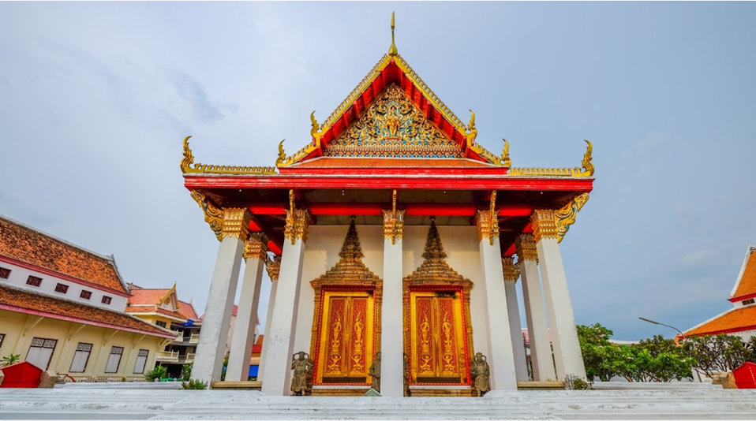
อ้างอิงภาพ: https://clib.psu.ac.th/southerninfo/content/1/2659e681
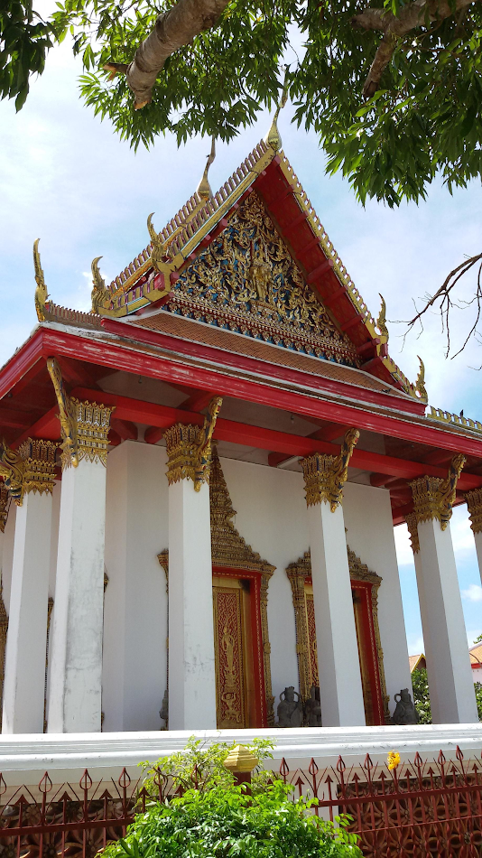
อ้างอิงภาพ: https://clib.psu.ac.th/southerninfo/content/1/2659e681
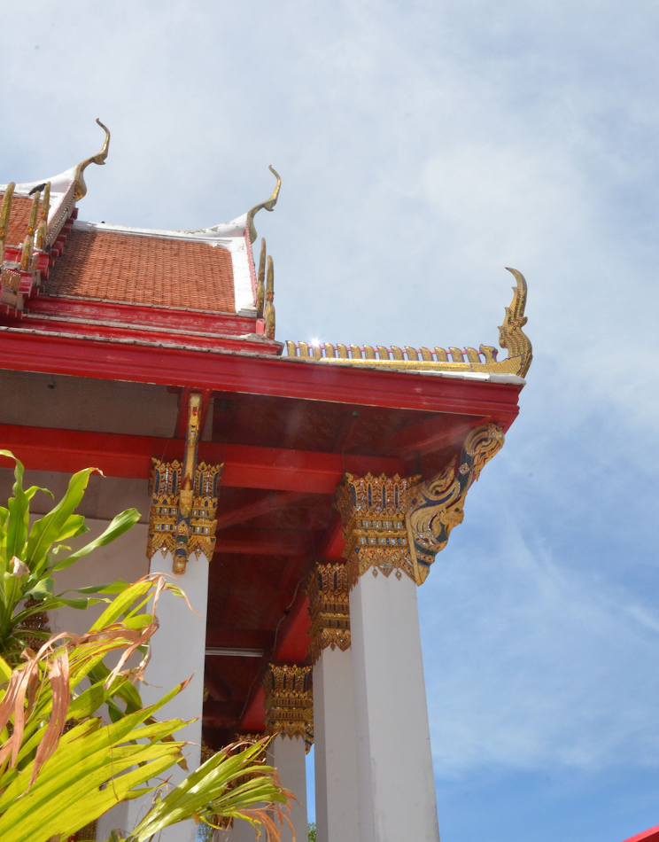
อ้างอิงภาพ: https://clib.psu.ac.th/southerninfo/content/1/2659e681
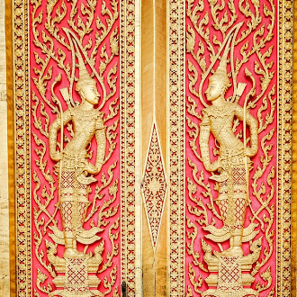
อ้างอิงภาพ: https://clib.psu.ac.th/southerninfo/content/1/2659e681
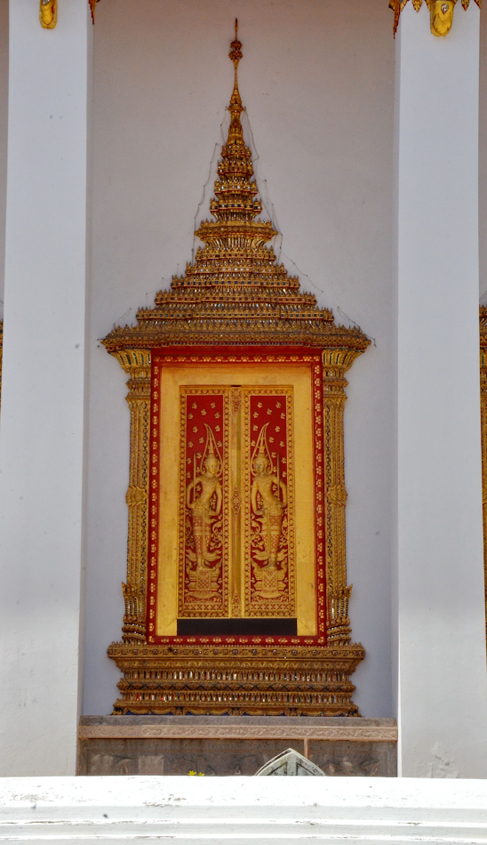
อ้างอิงภาพ: https://clib.psu.ac.th/southerninfo/content/1/2659e681
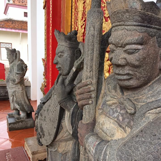
อ้างอิงภาพ: https://clib.psu.ac.th/southerninfo/content/1/2659e681
แหล่งข้อมูลเนื้อหาสถาปัตยกรรม: ฐานข้อมูลท้องถิ่นภาคใต้ สำนักทรัพยากรการเรียนรู้คุณหญิงหลงฯ มหาวิทยาลัยสงขลานครินทร์ (PSU Southern Information)
จิตรกรรมฝาผนัง
ผนังทั้ง ๔ ด้านภายในพระอุโบสถมีจิตรกรรมที่เป็นส่วนสำคัญของมรดกศิลปกรรมของวัด ภาพเหล่านี้ไม่ได้เล่าเฉพาะเรื่องทางศาสนา แต่ยังสะท้อนผู้คน สังคม และวัฒนธรรมในอดีต
จิตรกรรมภายในพระอุโบสถเขียนเสร็จในช่วง พ.ศ. ๒๔๐๖ ตามข้อมูลจากฐานข้อมูลท้องถิ่นภาคใต้ ภาพมีเรื่องราวเกี่ยวกับพุทธประวัติและเทพชุมนุม รวมถึงรายละเอียดที่ช่วยให้เห็นชีวิตและสังคมของผู้คน เช่น การประกอบอาชีพ การแต่งกาย และสภาพบ้านเรือน
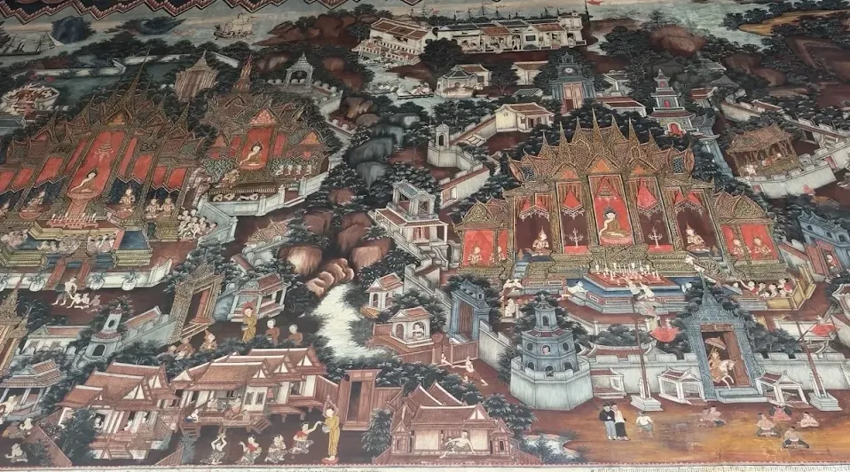
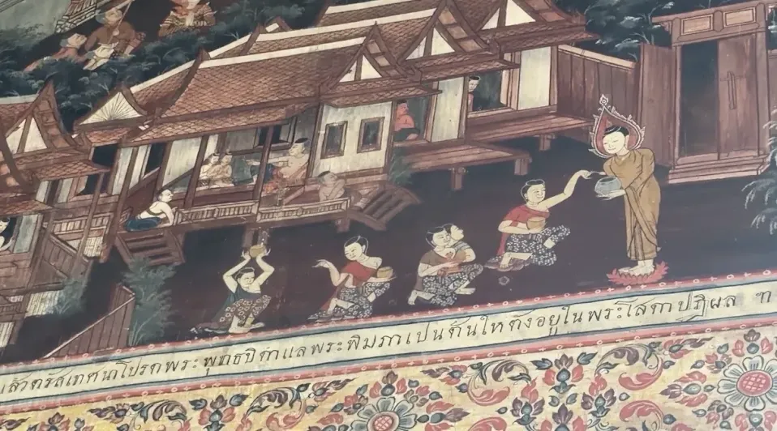
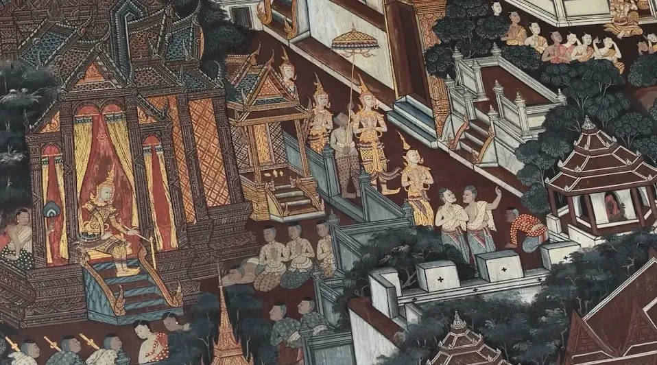
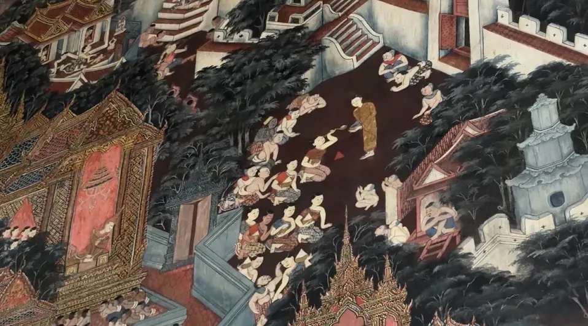
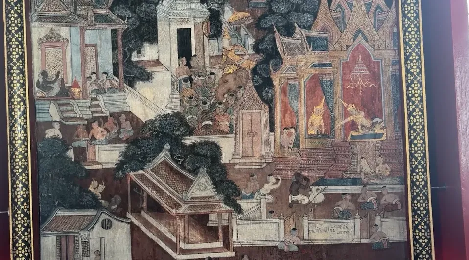
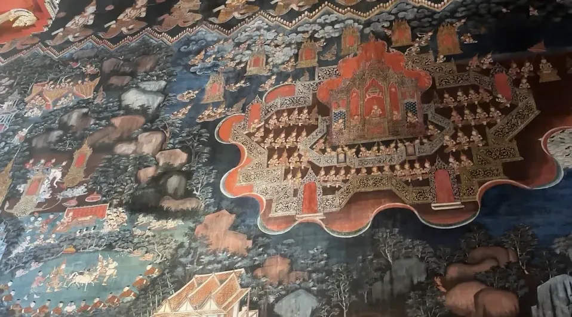
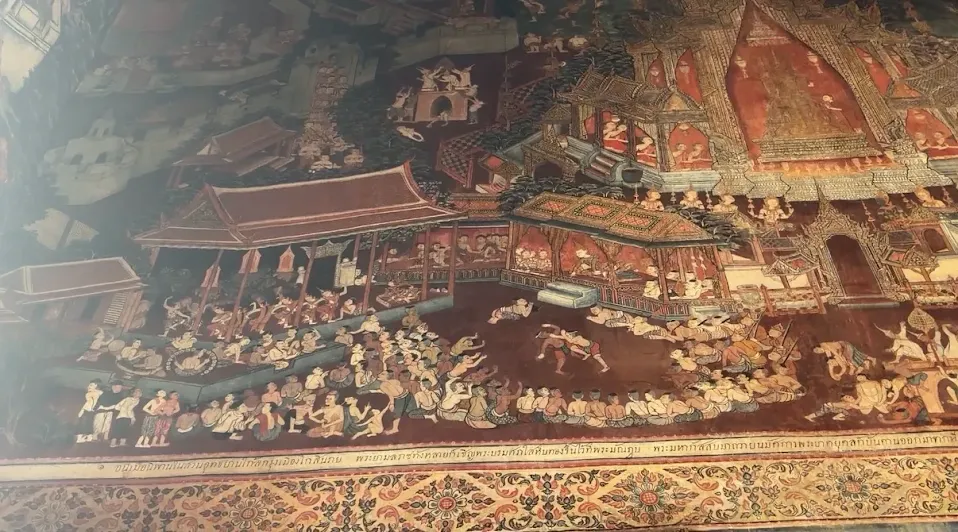
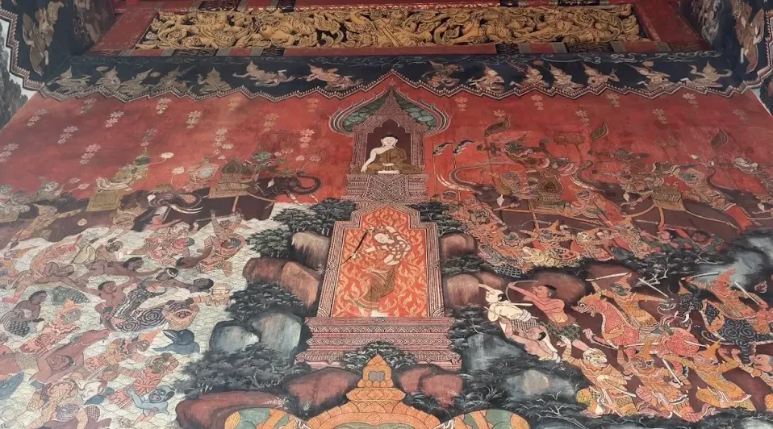
พิพิธภัณฑ์และโบราณวัตถุ
วัดมัชฌิมาวาสมีแหล่งรวบรวมและจัดแสดงโบราณวัตถุที่เกี่ยวข้องกับประวัติศาสตร์ของภาคใต้ ซึ่งช่วยให้ผู้ชมเรียนรู้เรื่องราวของพื้นที่ผ่านวัตถุจริง
ข้อมูลจากมหาวิทยาลัยสงขลานครินทร์ระบุถึงการรวบรวมศิลปะและโบราณวัตถุจากพื้นที่เมืองสงขลา สทิงพระ และระโนด และการจัดตั้งพิพิธภัณฑสถานเพื่อเป็นแหล่งเรียนรู้สำหรับคนรุ่นหลัง
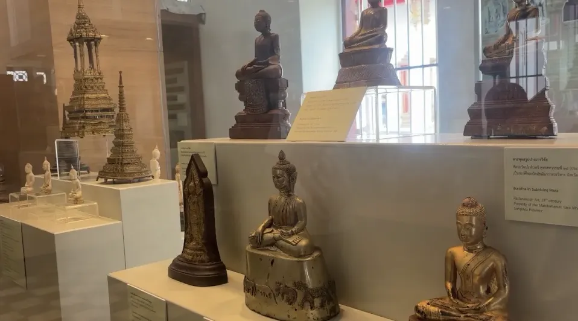
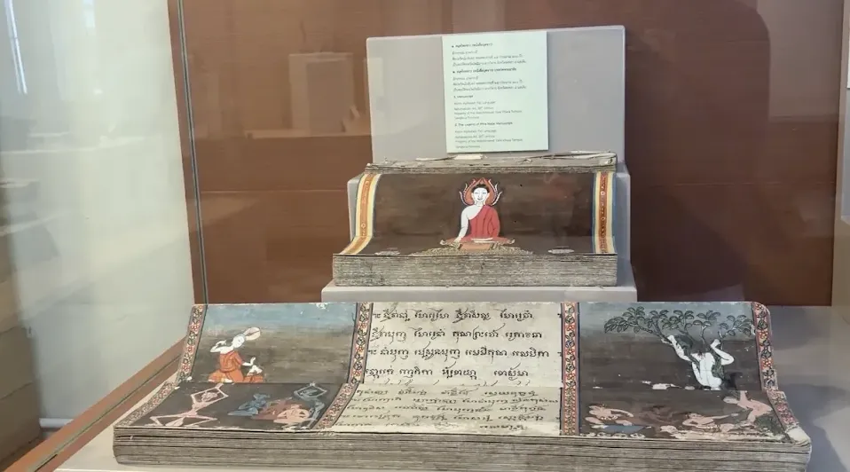
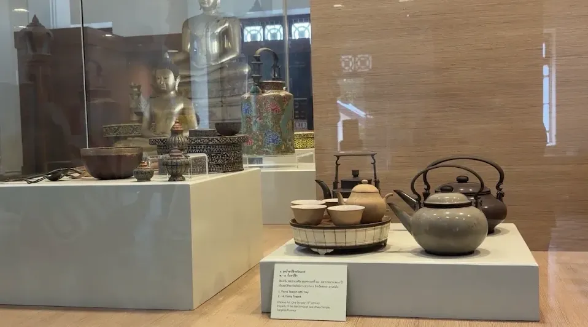
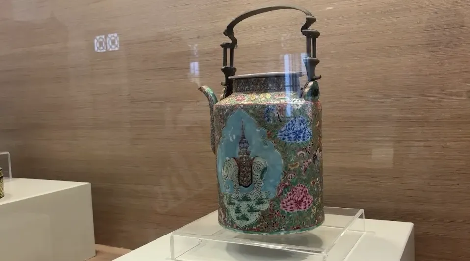
Digital Guide และ QR Code
เทคโนโลยีในโครงงานนี้ทำหน้าที่เป็นส่วนเสริมของการเรียนรู้ โดยเชื่อมจากวิดีโอไปยังข้อมูลเพิ่มเติมบนเว็บไซต์
สแกน QR Code
ผู้ชมสแกน QR Code ที่แสดงในวิดีโอเพื่อเข้าสู่เว็บไซต์
เลือกหัวข้อ
เลือกอ่านประวัติ สถาปัตยกรรม จิตรกรรม หรือโบราณวัตถุ
เรียนรู้เพิ่มเติม
กลับมาดูข้อมูลและภาพประกอบได้ด้วยตัวเอง แม้วิดีโอจะจบแล้ว
แหล่งข้อมูลและเครดิต
รวบรวมแหล่งข้อมูลที่ใช้ประกอบเนื้อหาใน Digital Guide และเครดิตภาพที่ผู้จัดทำเลือกนำมาใช้
มหาวิทยาลัยสงขลานครินทร์ — Southern Information
ข้อมูลประวัติ สถาปัตยกรรม โบราณสถาน โบราณวัตถุ และจิตรกรรมของวัดมัชฌิมาวาส
กรมศิลปากร
ข้อมูลประวัติวัดและข้อมูลด้านการอนุรักษ์จิตรกรรมฝาผนัง
Facebook ชุมชาวจีนเมืองสงขลา
แหล่งอ้างอิงสำหรับภาพเก่าของวัดตามที่ผู้จัดทำรวบรวม
Kapook Travel
แหล่งอ้างอิงสำหรับภาพ/ข้อมูลเมืองสงขลาในอดีตตามที่ผู้จัดทำรวบรวม
เครดิตภาพที่ผู้จัดทำนำมาใช้ควรตรวจสอบเงื่อนไขการเผยแพร่และระบุแหล่งที่มาตามต้นฉบับก่อนเผยแพร่สาธารณะ
เข้าชม Digital Guide
หลังจากเว็บไซต์เผยแพร่บน GitHub Pages แล้ว ให้นำ URL จริงมาสร้าง QR Code และใส่ในวิดีโอ
ช่องนี้จะเปลี่ยนเป็น QR Code จริงเมื่อได้ URL ของเว็บไซต์
พื้นที่สำหรับ QR CODE
สร้าง QR หลังได้ URL จริง